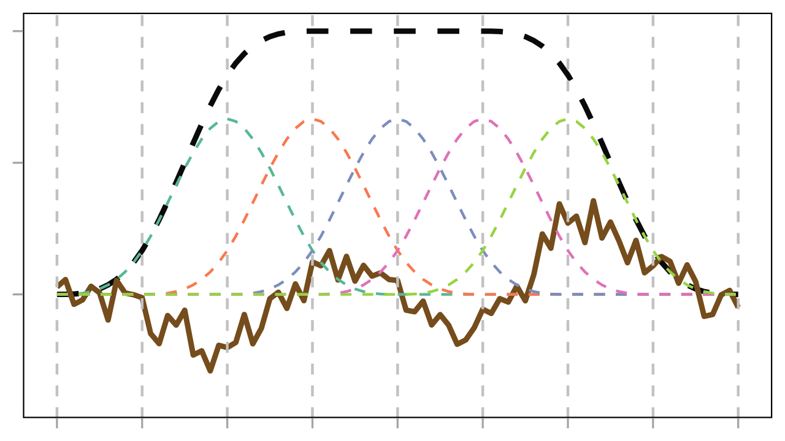

# A tibble: 6 × 2
group score
<fct> <dbl>
1 control 72
2 control 75
3 control 74
4 treatment 80
5 treatment 83
6 treatment 85高等数据统计分析
第七讲：广义加性模型（GAM）
易湘琦
你将学到
- 线性模型中的“线性”究竟指什么？
- 处理“非线性”的基本思路
- 广义加性模型（GAM）的基本思想
- 样条（Splines）与基函数（Basis Functions）
- GAM 如何通过惩罚项防止过拟合
- 在 R 中使用 mgcv 包拟合 GAM
- 模型诊断
“线性”模型
什么是“线性”模型？
下面的是“线性”模型吗？ \[ \begin{align} &y_i = \beta_0 + \beta_1 x_i + \beta_2x_i^2 + \varepsilon_i \\ &y_i = \beta_0 + \beta_1 log(x_i) + \varepsilon_i \\ &y_i = \beta_0 + \beta_1 x_i w_i + \varepsilon_i \\ &y_i = \beta_0 + \beta_1 \text{exp}(x_i) + \varepsilon_i \\ &y_i = \beta_0 + \beta_1 \text{sin}(x_i) + \varepsilon_i \\ \end{align} \]
下面这些呢？ \[ \begin{align} &y_i = \beta_0 + \beta_1 x_i^{\beta_2} + \varepsilon_i \\ &y_i = \beta_0 + \beta_1 e^{\beta_2x_i} + \varepsilon_i \\ &v_i = \frac{v_{max}s_i}{k_m + s_i} \\ \end{align} \]
什么是“线性”模型？
“The word ‘linear’ in linear regression basically means linear in the parameters.”
\[ \begin{align} &y_i = \beta_0 + \beta_1 x_i + \beta_2x_i^2 + \varepsilon_i \\ &y_i = \beta_0 + \beta_1 log(x_i) + \varepsilon_i \\ &y_i = \beta_0 + \beta_1 x_i w_i + \varepsilon_i \\ &y_i = \beta_0 + \beta_1 \text{exp}(x_i) + \varepsilon_i \\ &y_i = \beta_0 + \beta_1 \text{sin}(x_i) + \varepsilon_i \\ \end{align} \]
对于以上的方程，可以定义一个新的变量，将其转换成我们熟悉的线性模型的形式，比如： \[ \begin{align} &y_i = \beta_0 + \beta_1 log(x_i) + \varepsilon_i \\ &z_i = log(x_i) \\ &y_i = \beta_0 + \beta_1 z_i + \varepsilon_i \\ \end{align} \]
分类变量怎么进入“线性”模型？
- 关键仍然是：对参数是线性的
- 分类变量本身不能直接做加减乘除，可以通过定义指示变量（indicator / dummy variables）将其引入线性模型
例如，对于一个二元分类变量，有两个水平 A 和 B，可以定义一个指示变量：
\[ y_i = \beta_0 + \beta_1 I(x_i = \text{B}) + \varepsilon_i \]
- 当 \(x_i\) 属于基线组 A 时，\(I(x_i = \text{A}) = 0\)
- 当 \(x_i\) 属于组 B 时，\(I(x_i = \text{B}) = 1\)
- 所以模型依旧是对 \(\beta_0, \beta_1\) 线性的
二元分类变量：两组均值模型
设 \(group_i \in \{\text{control}, \text{treatment}\}\)，定义
\[ D_i = I(group_i = \text{treatment}) \]
则
\[ y_i = \beta_0 + \beta_1 D_i + \varepsilon_i \]
- 当 \(D_i = 0\)（control）时：\(E(y_i) = \beta_0\)
- 当 \(D_i = 1\)（treatment）时：\(E(y_i) = \beta_0 + \beta_1\)
- 因此 \(\beta_1\) 表示 treatment 与 control 的均值差
多水平分类变量
对于有 \(K\) 个水平的分类变量，只需要定义 \(K - 1\) 个 dummy variables。例如，分类变量 color：red、blue 和 green，以 red 为基线水平，则 \[
\begin{align}
D_{blue} &= I(color_i = \text{blue}) \\
D_{green} &= I(color_i = \text{green})
\end{align}
\]
于是 \[ y_i = \beta_0 + \beta_1 D_{blue} + \beta_2 D_{green} + \varepsilon_i \]
| Color | Dblue | Dgreen |
|---|---|---|
| red | 0 | 0 |
| blue | 1 | 0 |
| green | 0 | 1 |
系数解释：
- red 组均值：\(\beta_0\)
- blue 组均值：\(\beta_0 + \beta_1\)
- green 组均值：\(\beta_0 + \beta_2\)
R 示例：分类变量进入lm()
Call:
lm(formula = score ~ group, data = binary_demo)
Residuals:
1 2 3 4 5 6
-1.6667 1.3333 0.3333 -2.6667 0.3333 2.3333
Coefficients:
Estimate Std. Error t value Pr(>|t|)
(Intercept) 73.667 1.202 61.294 4.24e-07 ***
grouptreatment 9.000 1.700 5.295 0.00611 **
---
Signif. codes: 0 '***' 0.001 '**' 0.01 '*' 0.05 '.' 0.1 ' ' 1
Residual standard error: 2.082 on 4 degrees of freedom
Multiple R-squared: 0.8752, Adjusted R-squared: 0.8439
F-statistic: 28.04 on 1 and 4 DF, p-value: 0.006107R 示例：分类变量进入lm()
Sepal.Length Sepal.Width Petal.Length Petal.Width
Min. :4.300 Min. :2.000 Min. :1.000 Min. :0.100
1st Qu.:5.100 1st Qu.:2.800 1st Qu.:1.600 1st Qu.:0.300
Median :5.800 Median :3.000 Median :4.350 Median :1.300
Mean :5.843 Mean :3.057 Mean :3.758 Mean :1.199
3rd Qu.:6.400 3rd Qu.:3.300 3rd Qu.:5.100 3rd Qu.:1.800
Max. :7.900 Max. :4.400 Max. :6.900 Max. :2.500
Species
setosa :50
versicolor:50
virginica :50
Call:
lm(formula = Sepal.Length ~ Species, data = iris)
Residuals:
Min 1Q Median 3Q Max
-1.6880 -0.3285 -0.0060 0.3120 1.3120
Coefficients:
Estimate Std. Error t value Pr(>|t|)
(Intercept) 5.0060 0.0728 68.762 < 2e-16 ***
Speciesversicolor 0.9300 0.1030 9.033 8.77e-16 ***
Speciesvirginica 1.5820 0.1030 15.366 < 2e-16 ***
---
Signif. codes: 0 '***' 0.001 '**' 0.01 '*' 0.05 '.' 0.1 ' ' 1
Residual standard error: 0.5148 on 147 degrees of freedom
Multiple R-squared: 0.6187, Adjusted R-squared: 0.6135
F-statistic: 119.3 on 2 and 147 DF, p-value: < 2.2e-16# A tibble: 150 × 3
Intercept Speciesversicolor Speciesvirginica
<dbl> <dbl> <dbl>
1 1 0 0
2 1 0 0
3 1 0 0
4 1 0 0
5 1 0 0
6 1 0 0
7 1 0 0
8 1 0 0
9 1 0 0
10 1 0 0
# ℹ 140 more rows# A tibble: 3 × 2
Term value
<chr> <dbl>
1 (Intercept) 5.01
2 Speciesversicolor 0.930
3 Speciesvirginica 1.58 多个分类变量
- 分类变量 A 有两个水平：a1 和 a2
- 分类变量 B 有两个水平：b1 和 b2
定义： \[ \begin{align} D_A &= I(A_i = a2) \\ D_B &= I(B_i = b2) \end{align} \]
于是 \[ y_i = \beta_0 + \beta_1 D_A + \beta_2 D_B + \varepsilon_i \]
| A/B | DA | DB |
|---|---|---|
| a1/b1 | 0 | 0 |
| a2/b1 | 1 | 0 |
| a1/b2 | 0 | 1 |
| a2/b2 | 1 | 1 |
系数解释：
- (a1,b1) 组均值：\(\beta_0\)
- (a2,b1) 组均值：\(\beta_0 + \beta_1\)
- (a1,b2) 组均值：\(\beta_0 + \beta_2\)
- (a2,b2) 组均值：\(\beta_0 + \beta_1 + \beta_2\)
多个分类变量：交互效应
如果我们认为 A 和 B 之间存在交互效应，那么模型可以写成： \[ y_i = \beta_0 + \beta_1 D_A + \beta_2 D_B + \beta_3 (D_A \times D_B) + \varepsilon_i \]
| A/B | DA | DB | DA \(\times\) DB |
|---|---|---|---|
| a1/b1 | 0 | 0 | 0 |
| a2/b1 | 1 | 0 | 0 |
| a1/b2 | 0 | 1 | 0 |
| a2/b2 | 1 | 1 | 1 |
R 示例：多个分类变量进入lm()
palmerpenguins::penguins数据集：
# A tibble: 344 × 8
species island bill_length_mm bill_depth_mm flipper_length_mm body_mass_g
<fct> <fct> <dbl> <dbl> <int> <int>
1 Adelie Torgersen 39.1 18.7 181 3750
2 Adelie Torgersen 39.5 17.4 186 3800
3 Adelie Torgersen 40.3 18 195 3250
4 Adelie Torgersen NA NA NA NA
5 Adelie Torgersen 36.7 19.3 193 3450
6 Adelie Torgersen 39.3 20.6 190 3650
7 Adelie Torgersen 38.9 17.8 181 3625
8 Adelie Torgersen 39.2 19.6 195 4675
9 Adelie Torgersen 34.1 18.1 193 3475
10 Adelie Torgersen 42 20.2 190 4250
# ℹ 334 more rows
# ℹ 2 more variables: sex <fct>, year <int>R 示例：多个分类变量进入lm()
问题：企鹅体重的物种间差异和性别间差异？
Call:
lm(formula = body_mass_g ~ species * sex, data = palmerpenguins::penguins)
Residuals:
Min 1Q Median 3Q Max
-827.21 -213.97 11.03 206.51 861.03
Coefficients:
Estimate Std. Error t value Pr(>|t|)
(Intercept) 3368.84 36.21 93.030 < 2e-16 ***
speciesChinstrap 158.37 64.24 2.465 0.01420 *
speciesGentoo 1310.91 54.42 24.088 < 2e-16 ***
sexmale 674.66 51.21 13.174 < 2e-16 ***
speciesChinstrap:sexmale -262.89 90.85 -2.894 0.00406 **
speciesGentoo:sexmale 130.44 76.44 1.706 0.08886 .
---
Signif. codes: 0 '***' 0.001 '**' 0.01 '*' 0.05 '.' 0.1 ' ' 1
Residual standard error: 309.4 on 327 degrees of freedom
(11 observations deleted due to missingness)
Multiple R-squared: 0.8546, Adjusted R-squared: 0.8524
F-statistic: 384.3 on 5 and 327 DF, p-value: < 2.2e-16R 示例：多个分类变量进入lm()
使用anova()获取不同变量的显著性：
Analysis of Variance Table
Response: body_mass_g
Df Sum Sq Mean Sq F value Pr(>F)
species 2 145190219 72595110 758.358 < 2.2e-16 ***
sex 1 37090262 37090262 387.460 < 2.2e-16 ***
species:sex 2 1676557 838278 8.757 0.0001973 ***
Residuals 327 31302628 95727
---
Signif. codes: 0 '***' 0.001 '**' 0.01 '*' 0.05 '.' 0.1 ' ' 1注意：
- 这里的
anova()给出的显著性对应于顺序平方和（Sequential Sum of Squares），Type I。 - 对于非平衡数据，不同变量进入模型的顺序会影响
anova()的结果。 - 对于非平衡数据，建议使用 Type II 或 Type III 的平方和来获取变量的显著性，可以使用
car::Anova()函数实现。
car::Anova()
- 对于非平衡数据，如果有充足理由认为不存在交互效应，可以使用 Type II 的平方和
- 这时候对于每个变量显著性的解读需要基于其他变量已经在模型中的前提下进行。
Anova Table (Type II tests)
Response: body_mass_g
Sum Sq Df F value Pr(>F)
species 143401584 2 749.016 < 2.2e-16 ***
sex 37090262 1 387.460 < 2.2e-16 ***
species:sex 1676557 2 8.757 0.0001973 ***
Residuals 31302628 327
---
Signif. codes: 0 '***' 0.001 '**' 0.01 '*' 0.05 '.' 0.1 ' ' 1car::Anova()
- 对于非平衡数据，如果存在交互效应，可以使用 Type III 的平方和
- 这时候对于每个变量显著性的解读需要基于其他变量已经在模型中的前提下进行。
- 需要注意的是，Type III 的平方和对于模型中变量的编码方式（contrasts）非常敏感，需要使用 sum contrasts。
如果我们认为 A 和 B 之间存在交互效应，那么模型可以写成： \[ y_i = \beta_0 + \beta_1 D_A + \beta_2 D_B + \beta_3 (D_A \times D_B) + \varepsilon_i \]
| A/B | DA | DB | DA \(\times\) DB |
|---|---|---|---|
| a1/b1 | 1 | 1 | 1 |
| a2/b1 | -1 | 1 | -1 |
| a1/b2 | 1 | -1 | -1 |
| a2/b2 | -1 | -1 | 1 |
- \(\beta_0\) 表示各组均值的平均值（grand mean）
- \(\beta_1\) 表示 a1 组相对于各组均值平均值的偏离
- \(\beta_2\) 表示 b1 组相对于各组均值平均值的偏离
- \(\beta_3\) 表示 A 和 B 之间的交互效应
contrasts()函数
R 中因子（factor）的默认编码方式是 treatment contrasts，即以第一个水平作为基线水平，其他水平相对于基线水平进行编码。可以使用contrasts()函数查看或修改因子的编码方式。例如：
Chinstrap Gentoo
Adelie 0 0
Chinstrap 1 0
Gentoo 0 1指定 sum contrasts 后，重新拟合：
Anova Table (Type III tests)
Response: body_mass_g
Sum Sq Df F value Pr(>F)
(Intercept) 5232595969 1 54661.828 < 2.2e-16 ***
species 143001222 2 746.924 < 2.2e-16 ***
sex 29851220 1 311.838 < 2.2e-16 ***
species:sex 1676557 2 8.757 0.0001973 ***
Residuals 31302628 327
---
Signif. codes: 0 '***' 0.001 '**' 0.01 '*' 0.05 '.' 0.1 ' ' 1“非线性”的示例
米氏方程（Michaelis-Menten equation）


如何处理非线性关系？
- 通过一定变换，可以将非线性关系转化为线性关系，例如：
\[ \begin{align} &v_i = \frac{v_{max}s_i}{k_m + s_i} \\ \end{align} \]
米式方程两边同时取倒数：
\[ \begin{align} &\frac{1}{v_i} = \frac{k_m + s_i}{v_{max}s_i} = \frac{k_m}{v_{max}}\frac{1}{s_i} + \frac{1}{v_{max}} \\ \end{align} \]
- 如果知道变量间的关系可以使用什么样的函数进行刻画，那么我们可以直接使用非线性最小二乘法（
nls()）进行拟合。
多项式拟合


多项式拟合的缺点
- 多项式拟合可能会导致过拟合，尤其是当多项式的阶数较高时。
- 多项式拟合在数据范围之外的预测可能会非常不准确。

广义加性模型
mgcv包拟合GAM

GAM 的基本思想
GAM 可用如下形式表示： \[ y_i = \beta_0 + f_1(x_{i1}) + f_2(x_{i2}) + \cdots + f_p(x_{ip}) + \varepsilon_i \]
其中\(f_j(.)\)是:
- 理论上描述了自变量与响应变量之间关系的未知函数，我们不知道它的具体形式，但假定它应该是一个平滑函数（smooth function）。
- 然后，我们用由一组基函数（basis functions）线性组合而成的样条函数（spline function）来近似这个未知函数： \[ f_j(x) = \sum_{k=1}^{K_j} \beta_{jk} b_{jk}(x) \]
样条函数与基函数

样条函数与基函数

样条函数与基函数

样条函数与基函数

三次样条函数（Cubic B-splines）

过拟合 vs. 欠拟合

wiggliness vs. smooth
GAM 在拟合的过程中引入了一个惩罚项（penalty term）来控制函数的wiggliness（即函数的弯曲程度）： \[
\text{Penalized Loss} = \text{Fitting Loss} + \lambda \int (f''(x))^2 dx
\]
wiggliness是通过函数的二阶导数来衡量的。函数越wiggly，二阶导数的值就越大。
- 当惩罚参数（lambda）较大时，模型会倾向于拟合一个更平滑的函数；
- 当惩罚参数较小时，模型可能会拟合一个更wiggly的函数。
mgcv包与惩罚参数的选择
mgcv包会通过一定方法，来自动选择最优的惩罚参数，从而在拟合数据和控制函数复杂度之间找到一个平衡点。
通过以下方式可以看到选择的惩罚参数：
gam()模型结果解读
Family: gaussian
Link function: identity
Formula:
Temperature ~ s(Year)
Parametric coefficients:
Estimate Std. Error t value Pr(>|t|)
(Intercept) -0.020477 0.009731 -2.104 0.0369 *
---
Signif. codes: 0 '***' 0.001 '**' 0.01 '*' 0.05 '.' 0.1 ' ' 1
Approximate significance of smooth terms:
edf Ref.df F p-value
s(Year) 7.837 8.65 145.1 <2e-16 ***
---
Signif. codes: 0 '***' 0.001 '**' 0.01 '*' 0.05 '.' 0.1 ' ' 1
R-sq.(adj) = 0.88 Deviance explained = 88.6%
-REML = -91.237 Scale est. = 0.016287 n = 172edf（effective degrees of freedom）是一个衡量平滑函数复杂度的指标。edf越大，函数越wiggly；edf越小，函数越平滑。
- edf = 1时，函数是一条直线，惩罚项抑制了所有的wiggliness。
- edf = 2时，函数的关系大致是二次的（一个简单的U形或倒U形）。
- edf > 2时，函数呈现非线性，且数值越高越复杂。
这里 p 值用于检验平滑函数是否显著不同于零函数（即没有关系）。如果 p 值小于某个显著性水平（如0.05），我们可以拒绝零函数的假设。
预计作业：用实例说明，零函数究竟是下列哪种情况：
- 一条直线，可能斜率不为零。
- 一条水平线
gam()模型结果解读

模型检验
gam.check()函数可以用来检验GAM模型的拟合情况，包括残差的分布、拟合值与残差的关系等。

Method: REML Optimizer: outer newton
full convergence after 5 iterations.
Gradient range [-1.462278e-08,3.407131e-09]
(score -91.23654 & scale 0.01628721).
Hessian positive definite, eigenvalue range [2.894852,85.14233].
Model rank = 10 / 10
Basis dimension (k) checking results. Low p-value (k-index<1) may
indicate that k is too low, especially if edf is close to k'.
k' edf k-index p-value
s(Year) 9.00 7.84 0.76 <2e-16 ***
---
Signif. codes: 0 '***' 0.001 '**' 0.01 '*' 0.05 '.' 0.1 ' ' 1这里的 p 值对应的零假设（Null hypothesis）是：
- H0: 残差是随机分布的，没有系统性的模式。
- H1: 残差存在系统性的模式，可能表明模型拟合不充分或者存在某些未捕捉到的结构。
当出现p值非常小（如 < 0.05），同时edf接近于 k’ （k-1，即基函数的数量减去1）时，可能表明模型欠拟合了数据，或者说模型过于简单，无法捕捉数据中的复杂关系，需要增加 k 的值来增加模型的灵活性。
k 的设定
k 值：
- k 是基函数的维数（数量）。
- 通过
s()函数中的k参数来指定。 - k 的默认值在单变量平滑器中通常是 10。
将k值设置为20，看看模型检验的结果：
这里使用了k.check()函数来检查k值的情况：
此时虽然p 值仍较低，但是 edf 明显小于 k’了，这表明模型已经足够灵活，如果残差中仍残留有明显模式，和 k 值的选择无关了。
ISIT 数据集
ISIT 数据集1记录了不同站位荧光强度的垂直剖面：
# A tibble: 789 × 14
SampleDepth Sources Station Time Latitude Longitude Xkm Ykm Month Year
<dbl> <dbl> <fct> <dbl> <dbl> <dbl> <dbl> <dbl> <fct> <fct>
1 517 28.7 1 3 50.2 -14.5 -34.1 16.8 4 2001
2 582 27.9 1 3 50.2 -14.5 -34.1 16.8 4 2001
3 547 23.4 1 3 50.2 -14.5 -34.1 16.8 4 2001
4 614 18.3 1 3 50.2 -14.5 -34.1 16.8 4 2001
5 1068 12.4 1 3 50.2 -14.5 -34.1 16.8 4 2001
6 1005 11.2 1 3 50.2 -14.5 -34.1 16.8 4 2001
7 1036 11.1 1 3 50.2 -14.5 -34.1 16.8 4 2001
8 1100 10.6 1 3 50.2 -14.5 -34.1 16.8 4 2001
9 1490 8.92 1 3 50.2 -14.5 -34.1 16.8 4 2001
10 1520 7.26 1 3 50.2 -14.5 -34.1 16.8 4 2001
# ℹ 779 more rows
# ℹ 4 more variables: BottomDepth <dbl>, Season <fct>, Discovery <dbl>,
# RelativeDepth <dbl>Rows: 789
Columns: 14
$ SampleDepth <dbl> 517, 582, 547, 614, 1068, 1005, 1036, 1100, 1490, 1520, …
$ Sources <dbl> 28.73, 27.90, 23.44, 18.33, 12.38, 11.23, 11.06, 10.57, …
$ Station <fct> 1, 1, 1, 1, 1, 1, 1, 1, 1, 1, 1, 1, 1, 1, 1, 1, 1, 1, 1,…
$ Time <dbl> 3, 3, 3, 3, 3, 3, 3, 3, 3, 3, 3, 3, 3, 3, 3, 3, 3, 3, 3,…
$ Latitude <dbl> 50.1508, 50.1508, 50.1508, 50.1508, 50.1508, 50.1508, 50…
$ Longitude <dbl> -14.4792, -14.4792, -14.4792, -14.4792, -14.4792, -14.47…
$ Xkm <dbl> -34.106, -34.106, -34.106, -34.106, -34.106, -34.106, -3…
$ Ykm <dbl> 16.779, 16.779, 16.779, 16.779, 16.779, 16.779, 16.779, …
$ Month <fct> 4, 4, 4, 4, 4, 4, 4, 4, 4, 4, 4, 4, 4, 4, 4, 4, 4, 4, 4,…
$ Year <fct> 2001, 2001, 2001, 2001, 2001, 2001, 2001, 2001, 2001, 20…
$ BottomDepth <dbl> 3939, 3939, 3939, 3939, 3939, 3939, 3939, 3939, 3939, 39…
$ Season <fct> 1, 1, 1, 1, 1, 1, 1, 1, 1, 1, 1, 1, 1, 1, 1, 1, 1, 1, 1,…
$ Discovery <dbl> 252, 252, 252, 252, 252, 252, 252, 252, 252, 252, 252, 2…
$ RelativeDepth <dbl> 3422, 3357, 3392, 3325, 2871, 2934, 2903, 2839, 2449, 24…不同站位的垂直剖面

GAM 拟合 ISIT 数据
这里通过 by 参数来为不同的站位拟合不同的平滑函数：

预计作业
- 使用
summary()，plot()和gam.check()来解读模型结果。 ISIT_gam_m0与下面模型有何区别。ISIT_gam_m0是否需要优化，如何优化？
参考资料
- Wood, S. N. (2017). Generalized additive models: an introduction with R. CRC press.
- Zuur, A. F., Ieno, E. N., Walker, N., Saveliev, A. A., & Smith, G. M. (2009). Mixed effects models and extensions in ecology with R. Springer Science & Business Media.